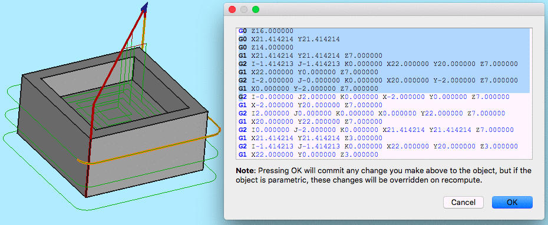

Tutoriel |
| Tutoriel |
|---|
| Atelier Path |
| Niveau |
| Temps d'exécution estimé |
| Auteur |
| Chrisb |
| Version de FreeCAD |
| 0.17 et ultérieur |
| Fichier(s) exemple(s) |
Voici une démonstration illustrant la création d'un travail Path WB à partir d"un modèle 3D générant un code G correcte pour le dialogue avec une CNC
Le Projet commence par un modèle de FreeCAD simple : un cube avec un trou rectangulaire,
Créé dans le Part Design(Conception) incluant un Corps(Organisme), une Boîte avec un trou , basée sur un Croquis(Sketch) orienté dans le plan XY.
Avec le Modèle 3D achevé, l'atelier Path est choisi.
Le Job est créé
Dans la boite de dialogue cliquer sur OK pour accepter le Corps comme le Modèle de Base, sans dessin.
Configuration de Travail
La fenêtre de dialogue ouvre sur la vue modèle la Fenêtre montre un cube de cadre filaire entourant le Corps de Base. L'Étiquette
Le chemin de fichier de sortie, le nom et l'extension et le Post-processeur. Pour des utilisateurs confirmés, des Arguments de Processeur Postaux peuvent être définis - la souris sur des allusions montre des arguments communs.
Nous modifions l'outil Par défaut en le choisissant et le déclic du bouton D'édition. Ceci ouvre le Contrôleur d'Outil la fenêtre d'édition.
Le nom donné à l'outil et le nombre d'outil correspond avec le nombre d'outil de la machine. Voici l'outil N° 4. Le contrôleur d'outil est configuré pour les taux d'alimentation horizontaux et verticaux de 2mm/s et une vitesse de 2000 trs/min.
Choisissez le sous-panneau d'Outil du contrôleur d'outil. Mettez le diamètre et - si vous voulez utiliser l'outil de simulation plus tard - ajouter une hauteur et un angle
Les valeurs seront confirmées avec OK
Pour l'accès libre tous les outils peuvent être prédéfinis et choisis dans leTool manager.
Le plan de travail Workplan commence vide et est rempli par l'ordre d'Opérations de Travail, des Commandes de Chemin Partielles et le Chemin . On précise l'ordre de ces articles ici.
On montre cette arborescence après la configuration du Travail une fois que le travail de chemin est développé :
Deux opérations seront ajoutées pour produire des chemins de fraisage pour ce travail de chemin. Le Contour l'opération crée un chemin autour de la boîte et le Pocket l'opération crée un chemin pour la cavité intérieure.
Pour le moment nous le garderons simples. Contour Le bouton ouvre le panneau de Contour. Après avoir confirmé avec Ok l'utilisation des valeurs par défaut, voir que le chemin vert autour de l'objet est visible.
Sélection du fond de la cavité PocketLe bouton ouvre la fenêtre de Forme de la cavité. Les valeurs par défaut pour la Géométrie de Base, des Profondeurs et des Hauteurs sont utilisées et le sous-panneau d'Opération est choisi et l'Étape Sur le Pour cent est mis à 50.
Le modèle est changé pour "Compenser" et l'Opération de Travail est confirmée pour la configuration de la cavité avec OK.
Le résultat est un modèle avec deux chemins :
Voici deux façons de vérifier les chemins créés. Le G-code peut être inspecté, y compris l'accentuation des segments de chemin correspondants. Le processus de fraisage du Travail de Chemin peut aussi être simulé pour démontrer les chemins d'outil idéalisés, nécessaires pour la géométrie d'Outil pour fraiser.
pour vérifier le G-code utiliser . Choisir les lignes de G-code correspondantes dans la fenêtre d'Inspection de G-code met en évidence des segments de chemin individuels. 
Démarrer la simulation en utilisant l'outil Path Simulator .
Ajustez la vitesse et l'exactitude et commencez la simulation avec le bouton de marche.
Si vous voulez finir la simulation cliquer sur le bouton "Annuler", il enlèvera le fichier créé pour la simulation. Si vous cliquez sur Ok cet objet sera gardé dans votre fichier.
L'étape final pour produire le G-code pour le l'usinage cible doit post-traiter le Travail. Ces productions les G-codes à un fichier qui peut être téléchargé à la machine CNC . Invoquer le Post-processeur :
L'outil pour post-traiter le fichier. Ceci ouvre une fenêtre de G-code permettant l'inspection du fichier de sortie final avant qu'il ne soit sauvegardé.
{kind=link}
{kind=link}
{kind=link}
{kind=link}
{kind=link}
{kind=link}
{kind=link}
{kind=link}
{kind=link}
{kind=link}
{kind=link}
{kind=link}
{kind=link}
{kind=link}
{kind=link}
{kind=link}
{kind=link}
{kind=link}
{kind=link}